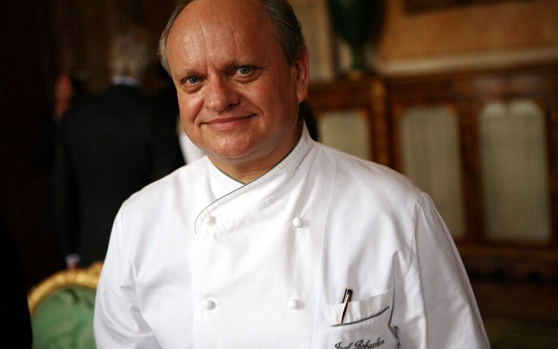

Découvrez les maîtres culinaires étoilés qui enchantent nos papilles.De part leur ambition, leur rigueur et leur don pour la cuisine, ils ont réussi à obtenir obtenir une, deux voire trois étoiles au guides Michelin ,voici le parcours de ces différentes personnalités et ce qui les caractérise.
Alain Ducasse
">Alain Ducasse, une figure emblématique de la gastronomie mondiale, est un chef cuisinier français dont la carrière illustre une passion inébranlable pour la cuisine et une détermination à atteindre l'excellence. Né le 13 septembre 1956 dans le Sud-Ouest de la France, il a depuis parcouru un chemin impressionnant qui l'a conduit à devenir l'un des chefs les plus renommés au monde.
Sa carrière a débuté de manière humble, mais sa passion pour la cuisine a rapidement attiré l'attention. Ducasse a fait ses premières armes dans des établissements prestigieux tels que le Pavillon Landais à Soustons, où il a développé ses compétences et affiné son art. Son parcours l'a ensuite conduit à travailler avec des chefs légendaires tels que Michel Guérard et Roger Vergé, où il a absorbé l'essence de la cuisine française traditionnelle.
Le tournant décisif de la carrière d'Alain Ducasse s'est produit lorsqu'il est devenu le chef de l'hôtel Juana à Juan-les-Pins à l'âge de seulement 33 ans. Sa cuisine novatrice et sa capacité à harmoniser les saveurs ont rapidement attiré l'attention des critiques gastronomiques et des amateurs de cuisine fine.
En 1987, il acquiert une renommée internationale en obtenant trois étoiles Michelin pour le restaurant Louis XV à l'Hôtel de Paris de Monte-Carlo. Cette reconnaissance a propulsé Alain Ducasse au sommet du monde culinaire, faisant de lui l'un des rares chefs à détenir trois étoiles dans trois restaurants différents.
L'empreinte d'Alain Ducasse ne se limite pas à la France. Il a étendu son empire culinaire à l'échelle mondiale avec des restaurants présents dans des destinations emblématiques telles que New York, Tokyo, Londres et Monaco. Chacun de ses établissements incarne l'élégance, l'innovation et la recherche constante de la perfection.
Ce chef visionnaire ne se contente pas de dominer la scène des restaurants étoilés, mais il a également été un pionnier dans l'exploration de nouvelles frontières culinaires. Alain Ducasse s'est engagé à promouvoir une cuisine respectueuse de l'environnement et axée sur la qualité des ingrédients. Son influence s'étend au-delà des cuisines de ses restaurants, car il partage son savoir-faire à travers des livres de cuisine, des émissions de télévision et des cours de cuisine.
La carrière d'Alain Ducasse incarne la passion, l'innovation et la persévérance. Son engagement envers l'excellence culinaire a laissé une empreinte indélébile sur le monde de la gastronomie, faisant de lui une source d'inspiration pour les chefs aspirants du monde entier. Aujourd'hui, Alain Ducasse continue de redéfinir les normes de la haute cuisine, prouvant que l'amour de la gastronomie peut transcender les frontières et captiver les palais du monde entier.
Joël Robuchon

Joël Robuchon, une légende de la cuisine française, est reconnu comme l'un des chefs les plus influents et décorés de son époque. Né le 7 avril 1945 à Poitiers, en France, Robuchon a consacré sa vie à l'art culinaire, élevant la cuisine française à des sommets inégalés.
Le parcours de Joël Robuchon commence de manière similaire à celui d'Alain Ducasse, avec une formation dans des établissements prestigieux. Il a fait ses débuts en tant que commis de cuisine à l'Hôtel de Ville à Poitiers avant de perfectionner ses compétences auprès de chefs éminents. Sa carrière a décollé lorsqu'il a été nommé chef du célèbre restaurant Jamin à Paris en 1981.
La marque distinctive de Robuchon réside dans sa quête obsessionnelle de la perfection. En 1984, seulement trois ans après avoir pris les rênes de Jamin, il a été récompensé de la note maximale de trois étoiles Michelin, un exploit rare à un aussi jeune âge. Cette reconnaissance a été le début d'une série d'honneurs pour le chef.
Joël Robuchon a été un visionnaire dans l'évolution de la gastronomie. Il a introduit le concept de la cuisine "Atelier," des espaces culinaires ouverts offrant une expérience immersive aux convives. Ces ateliers ont depuis été reproduits dans le monde entier, témoignant de l'impact mondial de Robuchon.
Avec un total de 32 étoiles Michelin, Joël Robuchon détenait le record du chef le plus étoilé au monde. Ses restaurants, présents dans des destinations prestigieuses telles que Las Vegas, Tokyo, et Hong Kong, sont des temples de la gastronomie où la créativité et la précision se marient pour offrir une expérience culinaire inoubliable.
Outre ses talents culinaires, Joël Robuchon était également un éducateur passionné. Il a partagé ses connaissances à travers des émissions de télévision, des livres de cuisine et des écoles de cuisine renommées. Son héritage continue à influencer des générations de chefs et d'amateurs de cuisine à travers le monde.
Le décès de Joël Robuchon en 2018 a été une perte profonde pour le monde de la gastronomie. Cependant, son héritage perdure à travers ses créations culinaires intemporelles, son approche méticuleuse de la cuisine, et sa contribution inestimable à l'élévation de la cuisine française au statut d'art. Joël Robuchon restera à jamais dans les mémoires comme un artiste culinaire incomparable, dont l'influence continuera d'inspirer les amateurs de gastronomie à travers le globe.
Philippe Conticini
Philippe Conticini, un virtuose de la pâtisserie française, est reconnu pour son ingéniosité créative et son approche novatrice de l'art sucré. Né le 16 juillet 1963 à Choisy-le-Roi, en France, Conticini a conquis le monde de la pâtisserie avec son talent exceptionnel et sa capacité à réinventer les classiques.
Le parcours de Philippe Conticini commence dans les cuisines prestigieuses de l'Hôtel de Crillon à Paris. Sa passion pour la pâtisserie l'a rapidement propulsé vers des sommets, et il a ensuite perfectionné son art aux côtés de grands chefs tels que Gaston Lenôtre. Cependant, c'est avec la création de la Pâtisserie des Rêves en 2009 que Conticini a véritablement laissé sa marque sur la scène culinaire.
La Pâtisserie des Rêves, un concept révolutionnaire de pâtisserie, a redéfini l'expérience sucrée en revisitant les classiques de manière moderne et élégante. Les créations de Conticini se distinguent par leur esthétique raffinée, leurs saveurs audacieuses et leur approche artistique. Ses desserts emblématiques, tels que le Paris-Brest revisité et le Saint-Honoré XXIe siècle, ont conquis les palais du monde entier.
Philippe Conticini est également reconnu pour sa philosophie de la "pâtisserie émotionnelle," une approche visant à éveiller des souvenirs et des émotions à travers les plaisirs sucrés. Ses créations ne sont pas simplement des desserts, mais des expériences sensorielles captivantes qui transcendent les limites de la pâtisserie traditionnelle.
En tant qu'auteur prolifique, Conticini a partagé sa passion à travers plusieurs livres de cuisine, permettant aux amateurs de reproduire ses créations innovantes chez eux. Son influence s'étend au-delà des frontières françaises, avec des collaborations internationales et des projets visant à propager son amour pour la pâtisserie à l'échelle mondiale.
L'héritage de Philippe Conticini réside dans sa capacité à marier la tradition et l'innovation, à transformer des ingrédients simples en œuvres d'art sucrées. Son impact sur le monde de la pâtisserie moderne reste indéniable, et son influence continuera d'inspirer les chefs pâtissiers et les gourmands passionnés à explorer de nouveaux horizons gustatifs. Philippe Conticini demeure l'architecte de la pâtisserie moderne, un créateur dont l'empreinte sucrée perdurera au fil des générations.
Cedric Grolet
Cédric Grolet, véritable prodige de la pâtisserie contemporaine, a émergé comme une force créative incontournable dans le monde sucré. Né le 22 avril 1985 à Firminy, en France, Grolet a conquis les amateurs de pâtisserie avec son approche avant-gardiste, sa maîtrise technique exceptionnelle et son talent artistique inné.
Le parcours de Cédric Grolet débute au sein de l'école hôtelière de Saint-Étienne, où sa passion pour la pâtisserie prend rapidement son envol. Sa carrière décolle véritablement lorsqu'il rejoint le légendaire hôtel Le Meurice à Paris en tant que chef pâtissier en 2012. Dès lors, Grolet a insufflé une énergie nouvelle à la pâtisserie française.
La signature distinctive de Cédric Grolet réside dans sa capacité à transformer des fruits en œuvres d'art comestibles. Ses sculptures fruitières, notamment ses créations en forme de fruits réalistes, ont captivé le monde entier. Les chefs-d'œuvre tels que la pomme, le citron, et la pêche, sont devenus emblématiques, démontrant l'approche artistique novatrice de Grolet.
En 2018, Cédric Grolet a été couronné du titre de "Meilleur Pâtissier du Monde" par Les Grandes Tables du Monde, une reconnaissance bien méritée de son impact révolutionnaire sur la pâtisserie. Son travail à l'Hôtel Le Meurice a également été récompensé de trois étoiles au Guide Michelin, attestant de son excellence dans le domaine.
Outre ses réalisations pâtissières, Grolet a publié des livres de cuisine, partageant ses techniques et inspirations avec les amateurs de pâtisserie du monde entier. Ses masterclasses et collaborations internationales ont contribué à propager son influence bien au-delà des frontières françaises.
Cédric Grolet incarne le mariage parfait entre la précision technique et la créativité artistique. Ses desserts ne sont pas seulement des délices sucrés, mais des œuvres éphémères qui transcendent les limites de la pâtisserie conventionnelle. En tant que magicien de la pâtisserie artistique, Cédric Grolet continue d'émerveiller le monde avec son imagination débordante et son engagement indéfectible envers l'innovation sucrée. Son héritage restera gravé dans l'histoire de la pâtisserie, inspirant les générations futures à repousser les frontières de la créativité gastronomique.